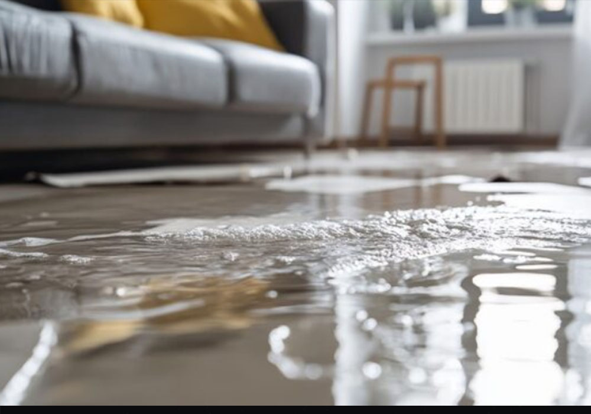
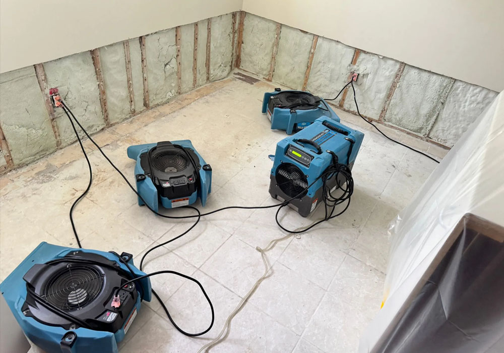
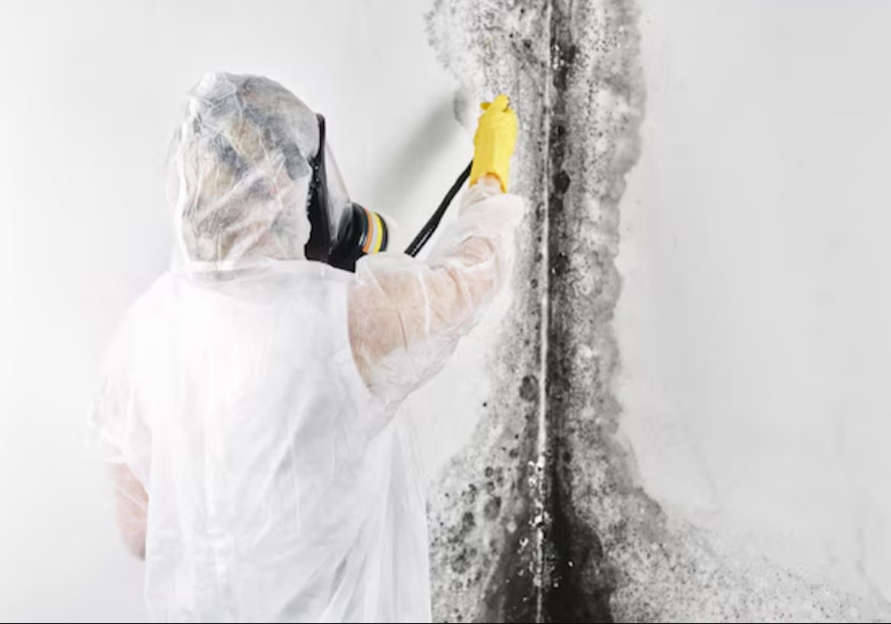
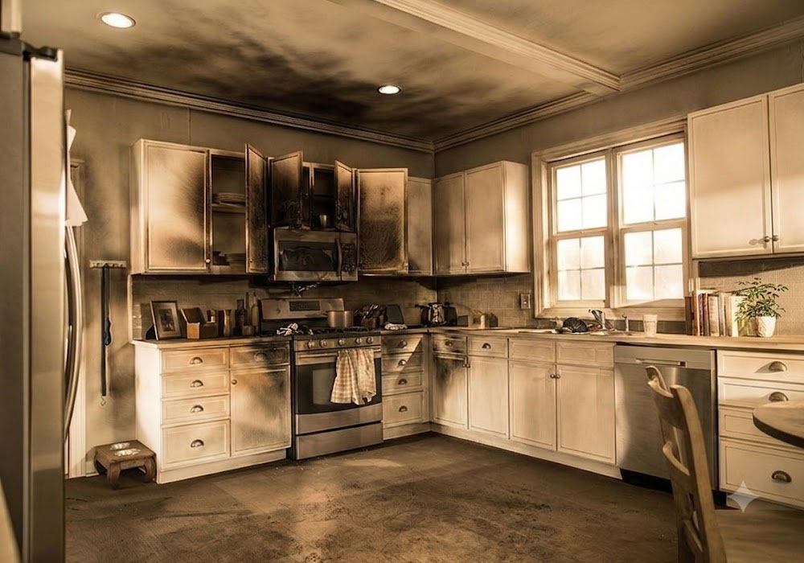
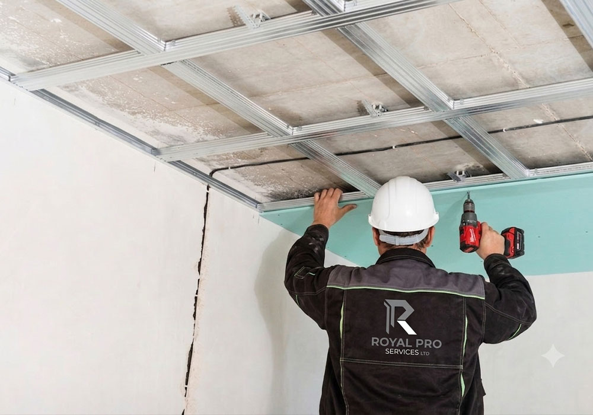
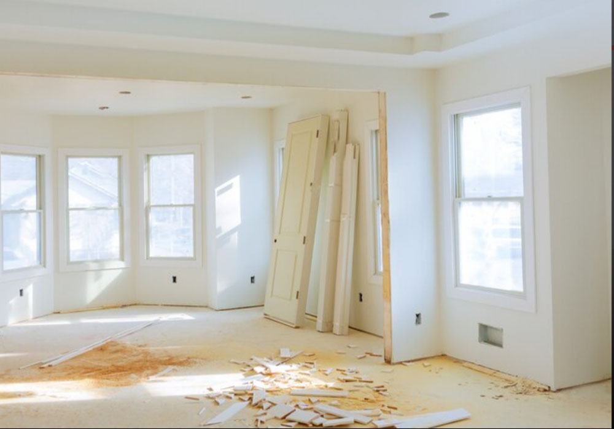

Emergency Water Damage Restoration
Support for leaks, burst pipes, wet drywall, damaged flooring and structural drying needs.
Water Damage ServicesRestoration services
Royal Pro Services supports urgent cleanup, mitigation, demolition, repair planning and restoration needs for homes, businesses, managed properties and real estate clients.
What we handle
Every property is different. The goal is to respond quickly, understand the affected areas and plan the right restoration steps without overpromising or making unverified claims.

Support for leaks, burst pipes, wet drywall, damaged flooring and structural drying needs.
Water Damage Services
Basement flooding, standing water, moisture control, sewer backup cleanup support and drying equipment setup.
Flood Cleanup
Assessment, containment planning, impacted material removal and remediation support for moisture-related mold.
Mold Services
Cleanup support after fire, smoke, soot, odour issues and affected-material damage.
Fire & Smoke
Controlled removal of damaged drywall, ceilings, flooring and affected materials during restoration projects.
Demolition Services
Drywall repair, flooring repair and rebuild support once cleanup, drying or demolition work is complete.
RestorationAdditional support
Royal Pro Services can support related restoration tasks including emergency board-up, pack-out / content support, attic mold support, odour removal, damaged material removal and repair planning.
Asbestos testing coordination and abatement support through qualified professionals.
This website does not claim licensed asbestos removal unless Royal Pro Services confirms the required licensing, insurance and qualifications.
Clients
Help after leaks, flooding, mold concerns, fire damage and damaged interiors.
Responsive support for rental properties, condos, commercial units and managed buildings.
Restoration support for offices, retail spaces, restaurants, listings and insurance-related projects.
FAQ
Call Royal Pro Services or send a request and we will contact you as soon as possible.